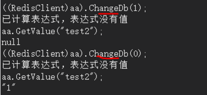
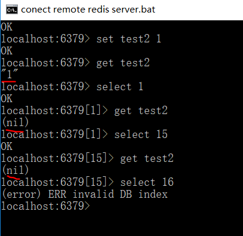
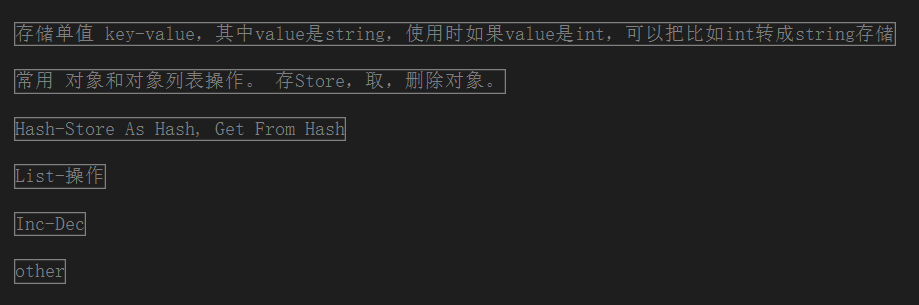
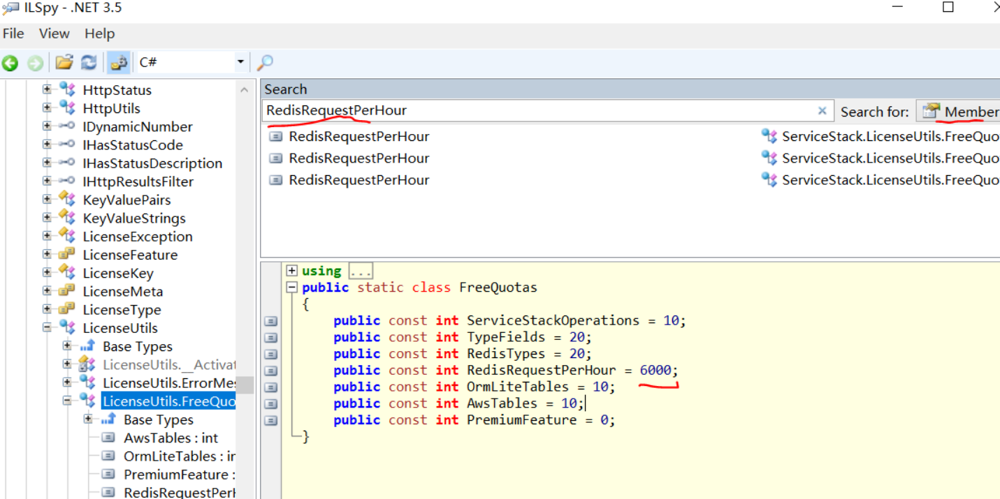
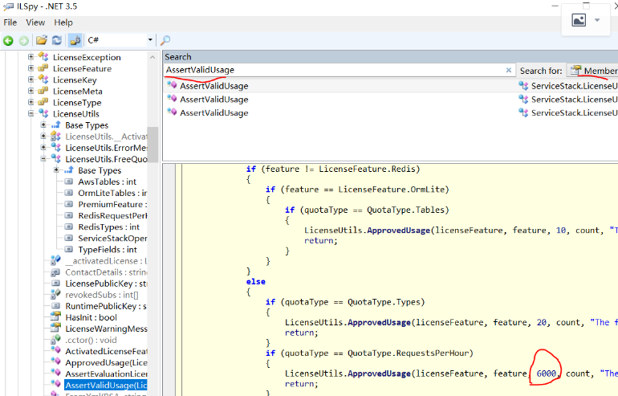
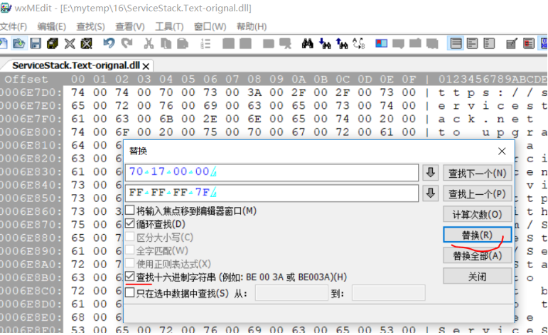
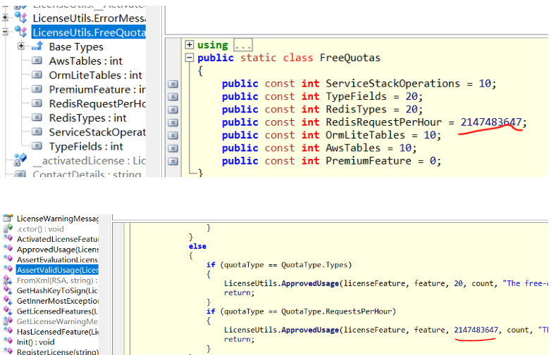
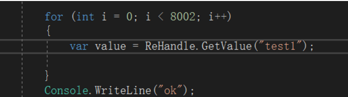
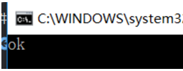

封装的Redis操作类名为RedisHandle，如下代码块（只展示部分代码），它的特点：
1）使用连接池管理连接，见代码中的PooledClientManager属性。如果不用连接池，而是代码直接RedisClient client = new RedisClient("localhost", 6379, "password");去获取一个连接实例操作，那么当Redis操作频繁时，代价很大，不可行。
2）支持读写分离的Redis服务端（如果你只用一个Redis服务端，那么读写服务端连接字符串一样即可）。
3）操作Redis时，自动切换读写Redis连接实例，见代码中的GetRedisClient函数，所有写操作取“写连接实例”PooledClientManager.GetClient()，所有读操作取“读连接实例”PooledClientManager.GetReadOnlyClient()。
注意：如果你读写是两个做了主从复制的Redis服务端，那么要考虑主从复制是否有延迟，是否有一些读操作要求实时数据，如果是，那么需要在GetXX读数据时用写连接实例。这时候，可以改写此GetXX函数，可在函数参数末尾增加 bool? isReadOnly = null 带默认值的参数，即支持外部调用指定用哪种连接实例操作。这种情况一般是系统把Redis当作一个NoSql数据库；而更多时候我们系统是把Redis当作一个缓存，不需要做主从复制，读写连接实例指向的是同一个Redis服务端，当系统比较大时可能会用到缓存集群（比如一致性哈希缓存等）。
4）后继如果Redis需要做一致性哈希等集群，那么可以实例化多个RedisHandle实例，然后撰写算法来取相应的RedisHandle实例。
1 namespace NetDh.RedisUtility
2 {
3 /*
4 * 一个RedisHandle实例对应一个Redis服务端或者一组主从复制Redis服务端。
5 * 如果Redis需要做一致性哈希等集群，则要自己撰写算法来取相应的RedisHandle实例。
6 */
7
8 /// <summary>
9 /// Redis操作类
10 /// </summary>
11 public class RedisHandle
12 {
13 /// <summary>
14 /// Redis连接池管理实例
15 /// </summary>
16 public PooledRedisClientManager PooledClientManager { get; set; }
17
18 /* 如果你的需求需要经常切换Redis数据库，则可把Db当属性，这样每一个RedisHandle实例可以对应操作某Redis的某个数据库。此时，可在构造函数中增加int db参数。*/
19 ///// <summary>
20 ///// 一个Redis服务端默认有16个数据库，默认都是用第0个数据库。如果需要切换数据库，则传入db值(0~15)
21 ///// </summary>
22 //public int Db { get; set; }
23
24 /// <summary>
25 /// 构造函数
26 /// </summary>
27 public RedisHandle()
28 {
29 #region 此代码为创建“连接池示例”，配置信息直接用静态类RedisClientConfig1承载，你也可以选择用配置文件承载
30 var config = new RedisClientManagerConfig
31 {
32 AutoStart = true,
33 MaxWritePoolSize = RedisClientConfig1.MaxWritePoolSize,
34 MaxReadPoolSize = RedisClientConfig1.MaxReadPoolSize,
35 DefaultDb = RedisClientConfig1.DefaultDb,
36 };
37 //如果你只用到一个Redis服务端，那么配置读写时就指定一样的连接字符串即可。
38 PooledClientManager = new PooledRedisClientManager(RedisClientConfig1.ReadWriteServers
39 , RedisClientConfig1.ReadOnlyServers, config)
40 {
41 ConnectTimeout = RedisClientConfig1.ConnectTimeout,
42 SocketSendTimeout = RedisClientConfig1.SendTimeout,
43 SocketReceiveTimeout = RedisClientConfig1.ReceiveTimeout,
44 IdleTimeOutSecs = RedisClientConfig1.IdleTimeOutSecs,
45 PoolTimeout = RedisClientConfig1.PoolTimeout
46 };
47 #endregion
48 }
49 /// <summary>
50 /// 构造函数
51 /// </summary>
52 /// <param name="poolManager">连接池，外部传入自己创建的PooledRedisClientManager连接池对象，
53 /// 可以把其它RedisHandle实例的PooledClientManager传入，共用连接池</param>
54 public RedisHandle(PooledRedisClientManager poolManager)
55 {
56 PooledClientManager = poolManager;
57
58 }
59 /// <summary>
60 /// 获取Redis客户端连接对象，有连接池管理。
61 /// </summary>
62 /// <param name="isReadOnly">是否取只读连接。Get操作一般是读，Set操作一般是写</param>
63 /// <returns></returns>
64 public RedisClient GetRedisClient(bool isReadOnly = false)
65 {
66 RedisClient result;
67 if (!isReadOnly)
68 {
69 //RedisClientManager.GetCacheClient()会返回一个新实例，而且只提供一小部分方法，它的作用是帮你判断是否用写实例还是读实例
70 result = PooledClientManager.GetClient() as RedisClient;
71 }
72 else
73 {
74 //如果你读写是两个做了主从复制的Redis服务端，那么要考虑主从复制是否有延迟。有一些读操作是否是即时的，需要在写实例中获取。
75 result = PooledClientManager.GetReadOnlyClient() as RedisClient;
76 }
77 //如果你的需求需要经常切换Redis数据库，则下一句可以用。否则一般都只用默认0数据库，集群是没有数据库的概念。
78 //result.ChangeDb(Db);
79 return result;
80 }
81
82 #region 存储单值 key-value，其中value是string，使用时如果value是int，可以把比如int转成string存储
83 public void SetValue(string key, string value, int expirySeconds = -1)
84 {
85 using (RedisClient redisClient = GetRedisClient())
86 {
87 //redisClient.SetEntry(key, value, expireIn);
88 if (expirySeconds == -1)
89 {
90 redisClient.SetValue(key, value);
91 }
92 else
93 {
94 redisClient.SetValue(key, value, new TimeSpan(0, 0, 0, expirySeconds));
95 }
96 }
97 }
98
99 public string GetValue(string key)
100 {
101 using (RedisClient redisClient = GetRedisClient(true))
102 {
103 var val = redisClient.GetValue(key);
104
105 return val;
106 }
107 }
108
109 public bool Remove(string key)
110 {
...5）在GetRedisClient函数中有句注释的代码//result.ChangeDb(Db);。其中，ChangeDb是切换Redis数据库（Redis默认有16个数据库，见redis-server.exe目录下的redis.conf配置文件中的“databases 16”）。我们一般默认都是用第0个数据库，如果需要切换数据库，则传入Db值(0~15)。我这边一般不会用到切换数据库的需求，如果你的需求需要经常切换Redis数据库，此句可用。否则一般都只用默认0数据库，集群是没有数据库的概念。
为了说明一个Redis服务端有多个数据库以及数据库之间的切换，做个小示例，如下图，我在Redis的第0个数据库存放了键值对数据"test2:1"，当我切到第1个数据库ChangeDb(1)时，GetValue("test2")返回的是null，当切回第0个数据库时，就取到1的值。

现在用命令登录Redis再演示一遍这个过程，如下图：

6）RedisHandle操作类包含的操作，大致如下图，Redis支持的数据类型比Memcache多，而且很实用，如果你的系统存取缓存会涉及比较复杂的逻辑，推荐使用Redis，Memcache能的Redis都能。

完整的源码请参考：https://gitee.com/donghan/NetDh-Framework/tree/master/Data/NetDh.RedisUtility
此工具类已经并到我的NetDh框架项目中，NetDh框架码云地址：https://gitee.com/donghan/NetDh-Framework
我这边封装的是ServiceStack.Redis最新版本5.7.0，它在4.0版本之后就商业化，有做限制：每小时只能有6000次的Redis访问。网上有对ServiceStack.Redis和StackExchange.Reids进行比较，结果是前者性能比较好，不管真假，我是ServiceStack.Redis 3.x就开始用它了，一如既往继续用呗，有限制就破解呗。
步骤：
1）限制6000次是在ServiceStack.Text.dll中，而且在两个地方，用ILSpy打开ServiceStack.Text.dll，在搜索栏输入“RedisRequestPerHour”，可以看到RedisRequestPerHour=6000的限制，如下图（第1步你可不做，看看就好）：

再搜索“AssertValidUsage”，发现另一个地方的6000次限制，如下图：

2）下载一个十六进制编辑器，我网上找的是wxMEdit工具（下载页面：http://wxmedit.github.io/downloads.html）。
3）先备份ServiceStack.Text.dll，用十六进制编辑器打开ServiceStack.Text.dll。
分析：6000转换成字节形式是 70 17 00 00（虽然6000的16进制是00001770），int的最大值2147483647转换成字节形式是 FF FF FF 7F，所以只要把70 17 00 00替换成FF FF FF 7F即可。
如下图，替换之前点了“查找下一个”发现全局就两个地方，那就确定是要修改的值，然后点击“替换”两次，ctrl+s保存文件，dll修改完成。

4）再用ILSpy看这两个值，已经修改了，如下图（第4步你也可不做，看看就好）：

5）把修改的dll覆盖原来dll，最好在IDE中把原来的引用移除，重新添加引用一次，以防有缓存执行的还是旧的dll。编写如下代码测试：

覆盖dll之前会报6000限制，覆盖之后输出ok正常：

完美，点赞！